Introduction
"Iron Reign" was my thesis project for my undergraduate degree in Computer Games Programming.
This is by far my favourite and most complex project that I have ever done. Coming from a fighting game backround myself,
it was really fun to figure out how to implement the fighting game mechanics on my own.
I love this project, and it is the most
fun I have had working on something.
I had 8 weeks to make this project, a Technical Design Document (TDD), a Game Design Document (GDD) and a presentation. All assets are original and created by me using Aseprite.

Game/Project Overview
Iron Reign is a traditional, ground based 2D Fighting game inspired from popular fighting game titles such as "Tekken" and "Street Fighter".
The main goal of this project was to develop a fighting game environment where CPUs (AI opponents) could be developed using various AI techniques,
that could play the game in a realistic way.
Engine: Unity Engine

Objectives of the Project
- Make a simple fighting game.
- Enemy AI: demonstrating AI techniques used in Fighting Games.
- Implementation of HP system that is used by the AI systems.
- Implement Attack/Defence System to be used by CPU and player.
- Minimalistic UI elements, for basic understanding of the gameplay.
- Inputs: compatible across several input devices.
- Audio: suitable soundtrack and sound effects for a fighting game.
Characters
This game features the base character type of a fighting game, a balanced character that represents the game fundamentals through their moveset. Meaning players and CPUs use the same character type. Each CPU variation is done with a different AI technique and a different approach in gameplay.
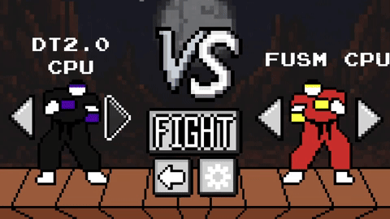Attack/Defence System
Attacks were implemented by enabling and disabling the hitboxes/colliders
from the animation events in Unity. Calculations such as, damage, knockback and others are done within scripts.
All the moves in the game have different uses, strengths and weaknesses.
Punches in Iron Reign generally have less range but less risk, while kicks have more range but are riskier to use.
When blocking a move, the character can act before the attacker, making some moves vulnerable to counter attacks
Iron Reign features a "High/Mid/Low System".
Punch1: High
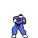
Fast Attack designed to check opponents and apply preassure. Can start combos if the opponent is in close range.
If blocked, the opponent can act slightley faster than the attacker, but it is tricky.
Although it is fast, the opponent can crouch/duck under it to evade it, giving them a chance to counter attack. Decent range.Punch2: Mid
Not very fast, not very slow. Unlike Punch1, Punch 2 is designed to check the opponent when they are ducking/crouching. Mid hitting moves require the player to be standing to succesfully block the move. Very poor range but high damage. If it is blocked the opponent can act faster than the attacker. Can be a combo ender (ex. Punch1 -> Punch1 -> Punch2)Kick1: Low
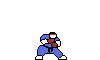 The only "Low" hitting move in the game. To block this move, the defending player has to hold down/downback to succesfully block the move. If blocked, the defender has enough time to counter attack the attacker with whatever move they want. The attack comes out at a time that is barely reactable. If the players are concentrated enough, it can be blocked consistenlty. Another propery of the move is that it "ducks/crouches", meaning that it can evade "High" hitting moves (ex. Punch1). Good range.Kick2: Mid
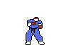 The strongest hitting move in the game. Has the most range and highest attacking power. Of course, the trade-off is that it can be easily countered if the defender succesfully blocks the move. It is however a "Mid" hitting move, so it cannot be evaded in any way and has to be blocked. Can be used as a zoning tool to keep the opponent away, a counter-attacking move and can outrange all other moves. Players need to be extremely cautious and selective to use this move. Very good range, slow startup.Iron Reign: Special Ability/Buff
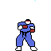 Iron Reign Special ability is designed to grant the user "damage on block", meaning that if the opponent blocks succesfully a move, they will take up to 50% of the moves damage. Of course the buff is not active for a long time and acts as a temporary aggressive buff. When using the ability, the user is vulnerable to incoming attacks so players need to activate it in a reasonable moment.Footsies Implementation
"Footsies", as the fighting game community describes, is the state of the game where no player has an advantage, also called neutral. In this state of the game, players are trying to find opening that are created with precise movement and timing.To deepen this concept, I made the 2 kicking moves extend the attackers hitbox, resulting in the opponent having a chance to hit the attackers leg during their animation. This tiny detail adds a lot more complexity to the neutral state of the game.
Ingame UI and Stage
Typical In-game fighting game UI. Made using the canvas feature in Unity, the UI includes the health bars of the characters, round timer and the special ability meter. 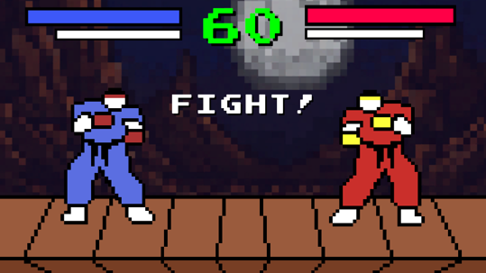Special ability meter is active for 10 seconds while the bar depletes and flashes to indicate the buff being active.

Stage Hazard and Camera Movement
At the edges of the stage, special tiles called “Deadzones” are placed. Being on them makes your character take more damage (2x) from any source of damage and some attacks can even become lethal on hit (kick2). Health UI changes to Red to indicate that the player is in danger. Traditional fighting game camera moving smoothly and scaling depending on the distance of the characters. 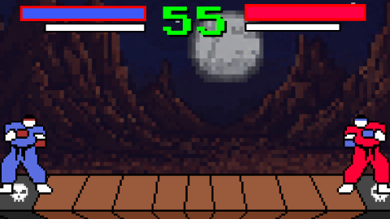Audio and Menus
Very simple and easy to understand UI menus. Standard Fighting Game sounds like blocking/hitting, announcer etc. Music was AI generated using Udio. Free sound effects from freesound.Audio menu fetures master, music and SFX sliders. 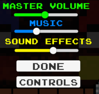 Controls menu acts as a guide on how to play and explaining some key features of the game/game mechanics. 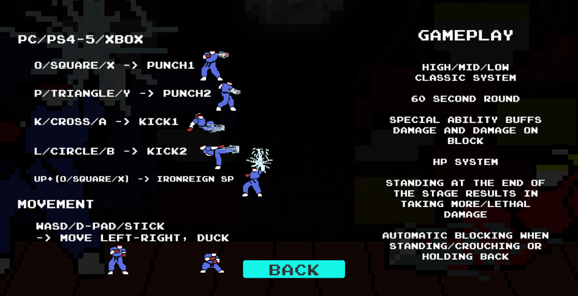
Duel Configurations
Character selection sceen allows:- Player vs CPU
- Player vs Player
- CPU vs CPU
AI CPUs
Iron Reign Prototype features 4 different types of CPU. Each CPU has a different playstyle and difficulty.FSM CPU: Standard Implementation of a Finite State Machine. The “base” template of the CPUs. Basic and kind of random gameplay. 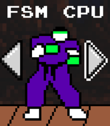
FuSM CPU: Fuzzy State Machine implementation. Plays Offence and Defence depending on the amount of health it has, and how much time has passed since it got hit. 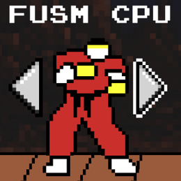
DT CPU: Finite State Machine + Decision Trees. A more advanced approach for optimal gameplay. Plays around timing, spacing and remaining health. 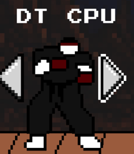
DT2.0 CPU: Same as DT CPU but it can pick up habits from opponents and adapt in those situations with the best counterattack. 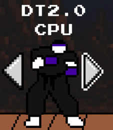
CPU States
All 4 CPUs use 4 different states:- Approach State
- Attack State
- Retreat State
- Defence State
Defence State is by far the most complex state and the one that needed the most time to develop. Defence state includes proper blocking, movement and counterattacking which can be tricky to balance for gameplay.
Scrips are from DT2.0 CPU
Input Device/Controls
Iron reign has many compatible input devices that were setup using Unity’s new input system. UI and Gameplay can be controlled with:- Keyboards
- Traditional controllers (Xbox, PlayStation etc.)
- Arcade Sticks/Leverless Arcade Sticks
Testing and Development
To achieve this state of the game I followed these steps:- Make necessary sprites.
- Make the game template, meaning a fully playable fighting game environment.
- Develop the first CPU (FSM).
- Make it feel more like a game by adding menus, audio etc.
- Develop the other CPU with different and more advanced techniques.
- Polish the game and fix as many bugs as possible.
Also got feedback by people who have played my game and ideas that I could consider developing.
Version control was managed using GitHub. Used Unity Engine 2022.3.29 to match the version in the labs.
Critical Reflection
All the goals were achieved and some exceeded:- Make a simple fighting game: Made extra mechanics to make the game more complex.
- Make Attack/Defence system: Special ability granting more damage and damage on block
- Enemy AI: Made advanced versions that can adapt to the opponent’s habits.
- Input Compatibility: All controllers are usable and added Player vs Player
- Minimalistic UI: Made more menus to make it feel more like a game.
- Audio: Fitting sounds and music.
- Health System: Basic health system and added chip damage (on block damage)
Conclusion/Potential Future Updates
For the future of this game, I would add:- More character archetypes (ex. Rush-down, poking, zoners etc.).
- Add more unique moves and concepts such as projectiles and special abilities depending on the character.
- Make CPUs specifically designed to play the other archetypes with unique gameplans.
- More unique stages and soundtracks
- Change my approach on how the main core mechanics are implemented such frame data, blocking and getting hit.
Conclusion
I am very satisfied with the result of the project and had a lot of fun making it. It is not hard to make AI for fighting games to play perfectly, it is hard to make them play realistically.
Back to main page